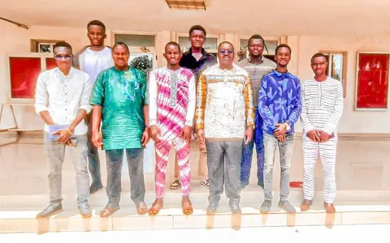

01
Climat et résilience
Contribuer à l’adaptation des territoires et des communautés aux effets du changement climatique, en conjuguant savoirs locaux, sensibilisation et solutions innovantes.

Alliance for Climate Innovation and Ecological Action
Basée à Ouagadougou, l’ACIEA est une organisation à but non lucratif qui réunit innovation, science et engagement citoyen pour protéger l’environnement et renforcer la résilience climatique au Burkina Faso et en Afrique de l’Ouest.
Qui sommes-nous
Face à l’urgence climatique et à la dégradation des écosystèmes, l’ACIEA a fait le choix de l’action. Créée en 2024 à Ouagadougou, l’Alliance rassemble des jeunes engagés, des profils scientifiques et techniques et des acteurs de terrain.
Notre conviction : l’innovation, la donnée et l’engagement collectif permettent de concevoir des solutions durables, adaptées aux réalités locales.
En savoir plusNotre mission
Promouvoir des solutions innovantes, durables et adaptées aux réalités locales face aux défis environnementaux, en renforçant les capacités des communautés et l’engagement citoyen.


2024
Année de création
Domaines d’intervention
Nos initiatives s’articulent autour de domaines complémentaires où l’innovation et l’engagement communautaire se renforcent mutuellement.
Contribuer à l’adaptation des territoires et des communautés aux effets du changement climatique, en conjuguant savoirs locaux, sensibilisation et solutions innovantes.
Œuvrer pour une gestion durable des ressources en eau et un meilleur assainissement, grâce à la surveillance environnementale et à la prévention des pollutions.
Préserver les écosystèmes et la biodiversité par le reboisement, la sensibilisation et la valorisation durable des ressources naturelles.
Mettre le numérique, la donnée et l’intelligence artificielle au service de l’action environnementale et de l’aide à la décision.
Ancrer l’action dans la connaissance : collecte de données, analyse et coopération avec les acteurs de la recherche.
Former, sensibiliser et mobiliser les jeunes et les communautés pour faire de chacun un acteur de la transition écologique.
Innovation numérique
Une application mobile et une plateforme de gestion pour renforcer la surveillance environnementale, la cartographie citoyenne et l’anticipation des risques de pollution liés à l’eau et à l’assainissement.
Indice de risque
Signalements
Aide à la décision
SAAGDO
Projets & initiatives

Actions de mise en terre de plants menées par les membres et les jeunes de l’Alliance, dont la participation à la Journée nationale de l’arbre 2025.

Sept jours de formation et d’action à Komsilga pour outiller les jeunes : agriculture hors-sol, recyclage des pneus usagés, éco-citoyenneté et reboisement.
Une solution numérique associant application mobile et plateforme de gestion pour la surveillance environnementale, la cartographie participative et l’anticipation des risques de pollution liés à l’eau et à l’assainissement.
Impact
Nos indicateurs sont publiés uniquement lorsqu’ils sont consolidés, vérifiés et datés.
1
Partenariat formalisé par protocole d’accord
GWP Afrique de l’Ouest, juillet 2026
5
Rencontres institutionnelles documentées
Mai – juillet 2025
7
Jours de formation et d’action au Camp Éco-Citoyen
Komsilga, septembre 2025
3
Ateliers pratiques proposés aux jeunes
Hors-sol, recyclage des pneus, éco-citoyenneté
Partenaires
Protocole d’accord · Signé le 3 juillet 2026
Le 3 juillet 2026, l’ACIEA et le GWP Afrique de l’Ouest ont signé un protocole d’accord au Secrétariat du GWP-AO à Ouagadougou. Ce partenariat porte sur la gestion durable des ressources en eau, la résilience climatique et l’innovation numérique, avec au cœur le déploiement de la solution SAAGDO.
Partenaire institutionnel de l’ACIEA. Le 22 juillet 2025, l’ACIEA a présenté sa mission et ses domaines d’intervention au président de la Délégation spéciale de la commune de Ouagadougou et à son directeur technique.
Actualités
Un protocole d’accord signé le 3 juillet 2026 à Ouagadougou pour la gestion durable de l’eau, la résilience climatique et l’innovation numérique, autour de la solution SAAGDO.
Du 2 au 8 septembre 2025, la commune de Komsilga a accueilli le Camp Vacances Éco-Citoyen : ateliers d’agriculture hors-sol, de recyclage des pneus usagés et d’éco-citoyenneté, complétés par des actions de reboisement.

L’ACIEA rend hommage au peuple burkinabè pour 65 ans de résilience, de dignité et d’engagement, et appelle à faire rayonner l’écocitoyenneté.
Institutions, bailleurs, universités, entreprises et organisations communautaires : rejoignez une dynamique d’innovation au service du climat.